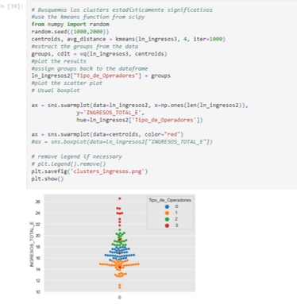

Comité de Pequeños Operadores de Telecomunicaciones
Antecedentes Recomendaciones del Consejo Consultivo Comité de Pequeños Operadores Identificación de un Pequeño Operador Resultados basados en el BIT Siguientes pasos
#ComitéPequeñosOperadores
Metodología y memoria de cálculo
Los resultados presentados fueron obtenidos a través de un modelo de aprendizaje automático no supervisado K-Means.
Se busca que el ejercicio sea transparente y replicable, incluso con la idea de que pueda compartirse el código en Python 3 (herramienta de análisis), donde se describe paso a paso, el tratamiento de los datos, el análisis y modelaje a partir de un modelo K-means de una sola dimensión.
El repositorio con los datos originales disponibles en el BIT y el algoritmo detallado se encuentran dando click aquí.
